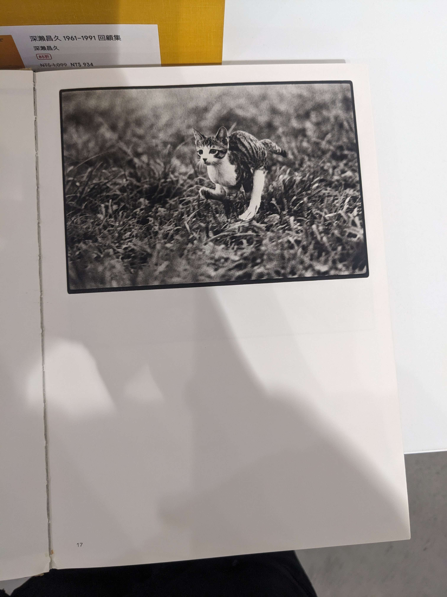
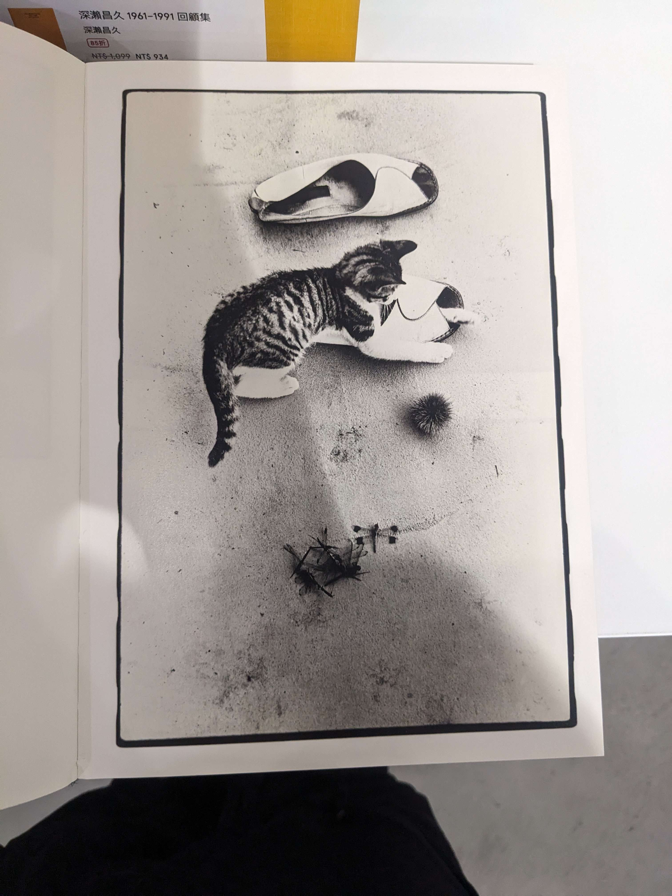
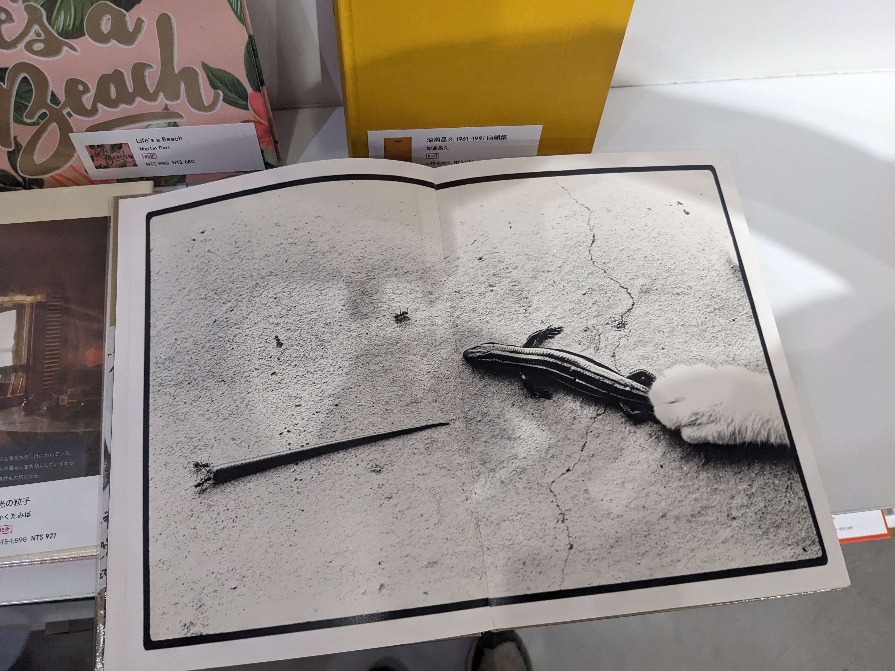
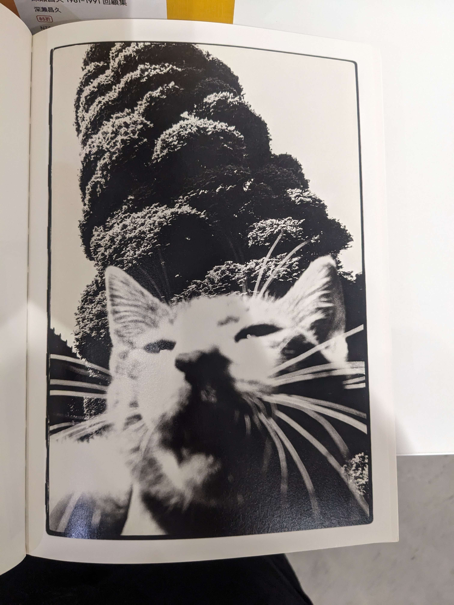
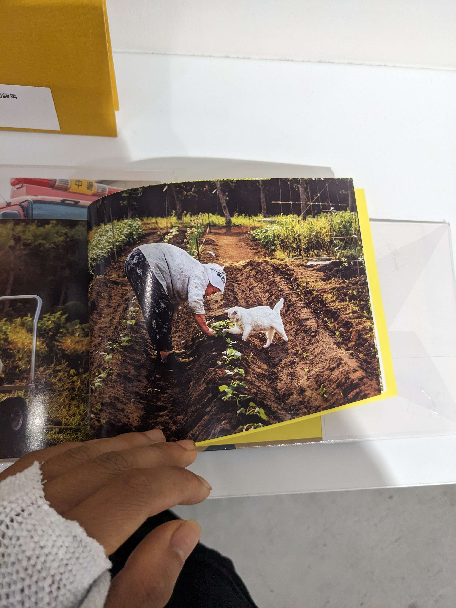
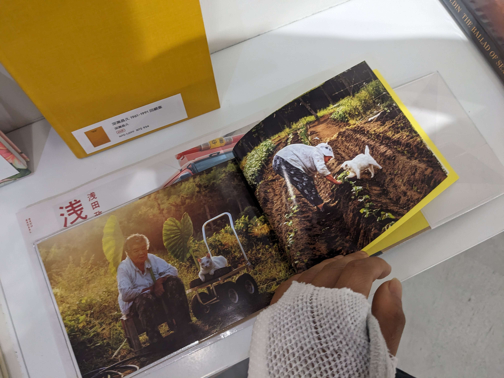
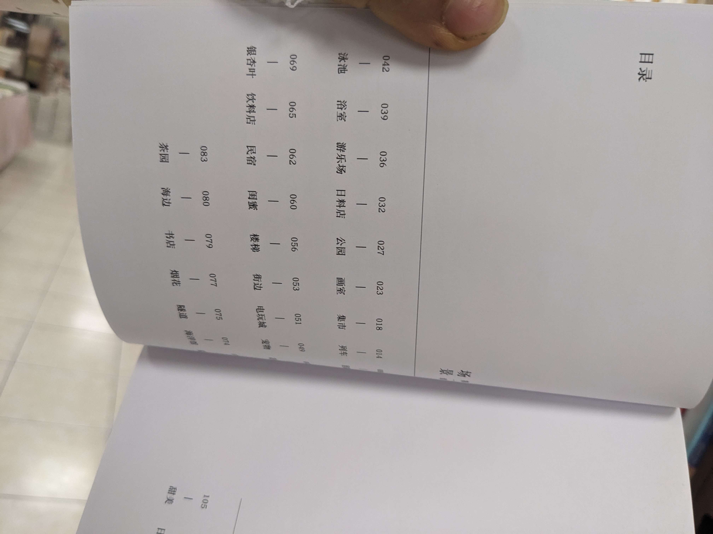
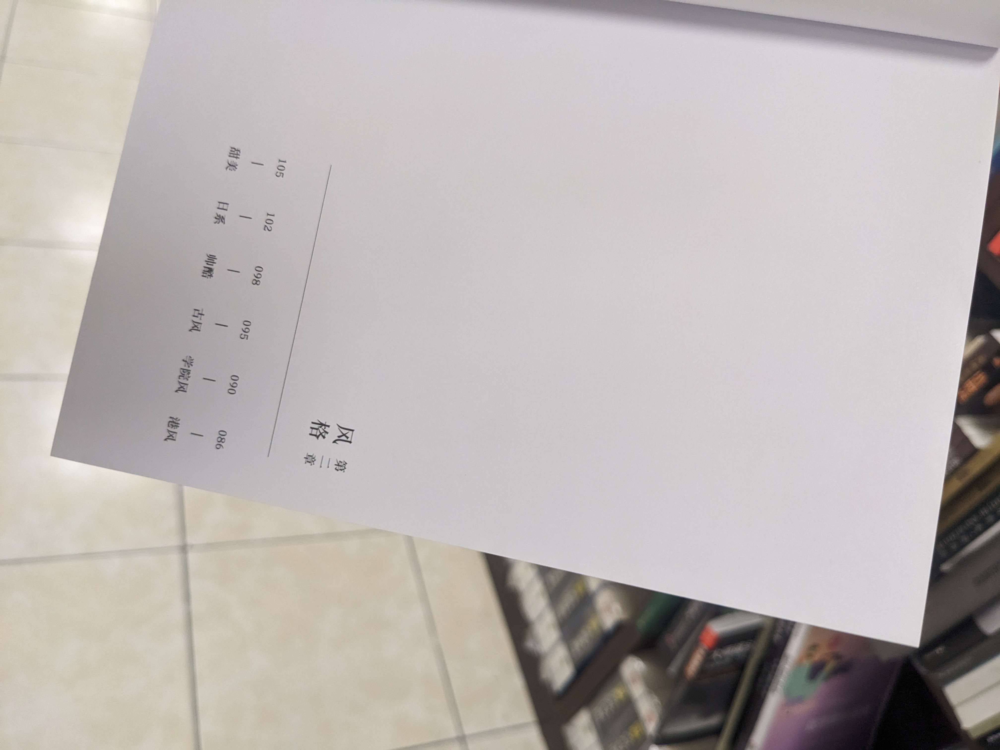

逛書店看到的一些攝影集
淺田家的編排方式，不翻還不知道 和我對群體肖像的感受差不多，看來路子是對的




深瀬昌久


和 Sasuke 相對的，拍出成貓的寧靜，老貓與老人互動成趣，構圖相當中庸，攝影家強於的是情境的構築


次方有趣，望照辦，只因錢包空空
逛書店看到的一些攝影集




深瀬昌久


和 Sasuke 相對的，拍出成貓的寧靜，老貓與老人互動成趣，構圖相當中庸，攝影家強於的是情境的構築


次方有趣，望照辦，只因錢包空空